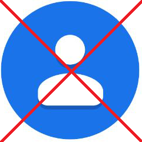

Você também fica frustrado quando é necessário adicionar um contato antes de poder começar a conversar no WhatsApp??

Informe o número do WhatsApp para abrir uma nova convesa
Inserir do 'Ctrl + V'
send